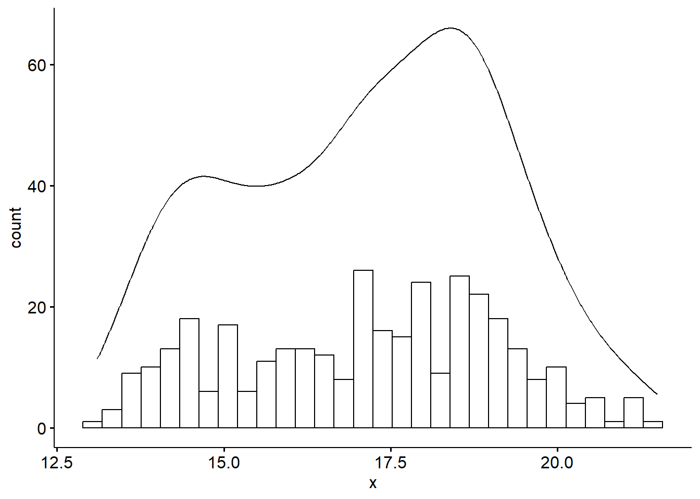
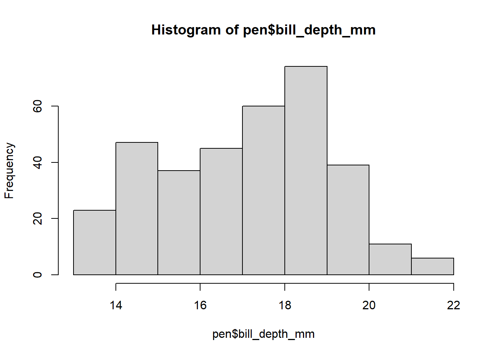

library(palmerpenguins)
pen <- penguins # because i don't want to type out penguins every timeDescribing Distributions of Data
lec04
Motivation
Visualizing your data is hands down the most important thing you can learn to do.
- Screen for data entry errors
- Out of range variables
- Mistakes in coding
- Violation of model assumptions
Level of care depends on the audience
There are three main audiences in mind when creating data visualizations:
- For your eyes only (FYEO). These are quick and dirty plots, without annotation. Meant to be looked at once or twice.
- You’ll create a TON of these. Don’t spend a ton of time on them.
. . .
- To share with others internally. These mostly need to stand on their own. Axes labels, titles, colors as needed, possibly captions.
- You’ll create a lot of these, and you’ll get better with practice at adding necessary annotation without a lot of time
. . .
- Professional - Contains all bells and whistles needed to make it publication quality.
- You’ll create very few of these, but they demand a lot of time, detail and thought.
Graphing with intent
Along with having the audience in mind, it is important to give thought to the purpose of the chart.
The effectiveness of any visualization can be measured according to how well it fulfills the tasks it was designed for. (A. Cairo, 2018).
Choosing Appropriate Visualization
75% of your choice is determined by the data type
Meet the Palmer Penguins
Single Categorical
Frequencies (N)
table(pen$species)
Adelie Chinstrap Gentoo
152 68 124 Percents (%)
table(pen$species) |> proportions() |> round(digits=2)
Adelie Chinstrap Gentoo
0.44 0.20 0.36 Penguin species Adelie make up 44% of the sample (n=152)
sjPlot::plot_frq(pen$species) + xlab("Species")
- Must include both the count
Nand the percent%. - Don’t need to describe every bar, just the 1-2 that stand out. E.g. largest and smallest? Categories that you care about.
Penguin species Adelie make up 44% of the sample (n=152)
Single Numeric
summary(pen$bill_depth_mm) Min. 1st Qu. Median Mean 3rd Qu. Max. NA's
13.10 15.60 17.30 17.15 18.70 21.50 2 The average bill depth is 17.15mm, with a median of 17.3mm
ggpubr::gghistogram(pen$bill_depth_mm, add_density = TRUE)
ggpubr::ggviolin(pen$bill_depth_mm, add = c("jitter", "boxplot")) + coord_flip()
The distribution of bill depth appears to be bimodal with peaks around 15 and 18mm.
summary(pen$bill_depth_mm) Min. 1st Qu. Median Mean 3rd Qu. Max. NA's
13.10 15.60 17.30 17.15 18.70 21.50 2 sd(pen$bill_depth_mm, na.rm=TRUE)[1] 1.974793IQR(pen$bill_depth_mm, na.rm=TRUE)[1] 3.1Bill depth ranges from 13.1 to 21.5mm, has an IQR of 3.1mm and a standard deviation of 1.9mm.
- Describe the
center,shapeandspread. - Include numbers
- Always in context of the problem
The average penguin bill depth is 17.15mm, with a standard deviation of 1.9mm. Ranging from 13.1 to 21.5mm, there is a bimodal pattern with peaks around 15 and 18mm but otherwise no skew is noted and no outliers are present.
How to create graphs
- Similar to the data management section, after identifying what you want to do, you go look up how to do that thing.
- Don’t expect to remember the exact code yet, just know where to look up an example and copy from there
- copy/paste/pray
- Keep graphs simple until you get more comfortable.
Additional Materials
- PMA6 Chapter 4
- Applied Stats course Notes Chapter 2
sjPlotvignette: https://strengejacke.github.io/sjPlot/index.htmlggpubrvignette: https://rpkgs.datanovia.com/ggpubr/ggplotvignette: https://ggplot2.tidyverse.org/index.htmlgtsummaryvignette: https://www.danieldsjoberg.com/gtsummary/index.html- R graphics cookbook: https://r-graphics.org/
Inspiration
Bonus
Nice summary table of multiple variables using gtsummary. Great option for your Table 1.
library(gtsummary)
pen %>% select(island, bill_depth_mm) %>%
tbl_summary()Characteristic |
N = 344 1 |
|---|---|
| island | |
| Biscoe | 168 (49%) |
| Dream | 124 (36%) |
| Torgersen | 52 (15%) |
| bill_depth_mm | 17.30 (15.60, 18.70) |
| Unknown | 2 |
| 1
n (%); Median (Q1, Q3) |
|
Default
pen %>% select(island, bill_depth_mm) %>%
tbl_summary(statistic = list(
all_continuous() ~ "{mean} ({sd})",
all_categorical() ~ "{n} / {N} ({p}%)"
))Characteristic |
N = 344 1 |
|---|---|
| island | |
| Biscoe | 168 / 344 (49%) |
| Dream | 124 / 344 (36%) |
| Torgersen | 52 / 344 (15%) |
| bill_depth_mm | 17.15 (1.97) |
| Unknown | 2 |
| 1
n / N (%); Mean (SD) |
|
Custom (preferred) summary statistics display